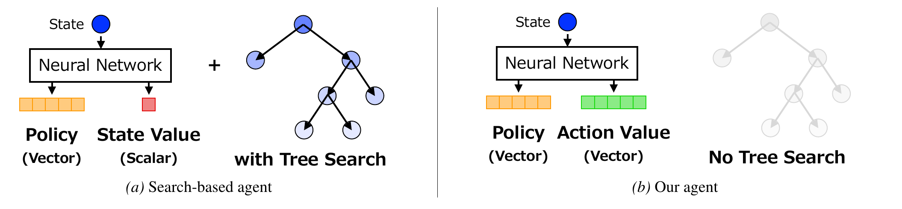
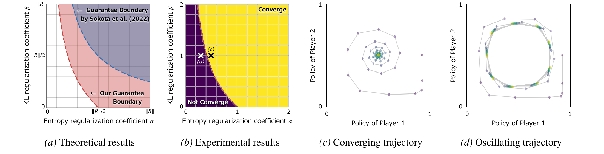
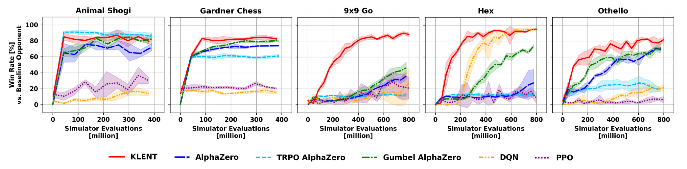

ICML 2026
Revisiting Regularized Policy Optimization for Stable and Efficient Reinforcement Learning in Two-Player Games
1The University of Tokyo / 2RIKEN AIP
Lay Summary
Strong game-playing AI systems based on reinforcement learning, such as AlphaZero, have achieved remarkable success by using look-ahead search to choose better moves. While this approach has been highly successful, it requires a large number of simulations during training, making it computationally expensive. As a result, building or reproducing strong game-playing AI has often been limited to researchers with enormous computing resources.
In this work, we propose a method that learns good moves directly from self-play, without using look-ahead search during training. By keeping its strategy from changing too abruptly as self-play progresses, our method stabilizes learning even without search. Experiments show that it can reach comparable performance to existing search-based methods using less computation.
Reducing the computation needed for training brings game-playing AI closer to a technology that more researchers and practitioners can use. From the standpoint of scientific reproducibility, lightweight methods also make experiments easier to verify. Moreover, our approach can serve as a promising baseline for applying reinforcement learning to new environments and decision-making problems, providing a foundation for further technical innovation.

Abstract
Two-player games such as board games have long been used as traditional benchmarks for reinforcement learning. This work revisits a policy optimization method with reverse Kullback-Leibler regularization and entropy regularization and analyzes this combination in two-player zero-sum settings from theoretical and empirical perspectives. From a theoretical perspective, we investigate the stability of the policy update rule in two theoretical settings: game-theoretic normal-form games and finite-length games. We provide novel convergence guarantees and verify our theoretical results through numerical experiments on synthetic games. From an empirical perspective, we derive a practical model-free reinforcement learning algorithm based on the regularized policy optimization. We validate the training efficiency of our algorithm through comprehensive experiments on five board games: Animal Shogi, Gardner Chess, Go, Hex, and Othello. Experimental results show that our agent learns more efficiently than existing methods across environments.
Our Approach
KLENT is a model-free self-play algorithm based on reverse-KL regularization and entropy regularization. The reverse-KL term keeps policy updates gradual as the opponent changes during self-play, while the entropy term maintains exploration and helps avoid overfitting to the agent's current behavior.
Given the current policy \(\pi\) and action-value estimate \(Q^\pi(s,a)\), KLENT considers the following regularized policy optimization problem:
Because the action space is finite, this objective has the following closed-form solution:
KLENT uses this analytical target for action selection and policy fitting, while directly learning action values instead of estimating them through Monte Carlo Tree Search.
Theoretical Results

We analyze the stability of the policy update in two-player zero-sum games. In normal-form games, the update is locally linearly convergent to the unique fixed point under the condition \(\alpha(\alpha + 2\beta) > \|R\|_2^2 / 4\), which gives a broader convergence region than a previous sufficient condition.
We also study finite-length games, including sequential board games, and prove convergence to an entropy-regularized optimal policy. The proof propagates stability backward from terminal states, matching the way values are learned earlier near the end of a game.
Experimental Results

We compare KLENT with AlphaZero, TRPO AlphaZero, Gumbel AlphaZero, DQN, and PPO on five board games. KLENT uses the same hyperparameters across environments and trains without look-ahead search.
Across these games, KLENT achieves competitive or higher training efficiency compared to existing methods. The advantage is especially visible in games with larger branching factors, where avoiding look-ahead search reduces the simulator-evaluation burden during training.
Conclusions & Further Results
KLENT shows that stable self-play in board games is possible without search during training when policy updates are regularized carefully. The results suggest that revisiting simple regularization principles can reduce the computational cost of training strong game-playing agents.
The full paper contains the detailed algorithm, proofs, ablation studies, sensitivity analyses, test-time computation experiments, and additional results on full-size 19x19 Go.
BibTeX
@inproceedings{ota2026revisiting,
title = {Revisiting Regularized Policy Optimization for Stable and Efficient Reinforcement Learning in Two-Player Games},
author = {Ota, Kazuki and Osa, Takayuki and Omura, Motoki and Harada, Tatsuya},
booktitle = {Proceedings of the 43rd International Conference on Machine Learning},
year = {2026}
}